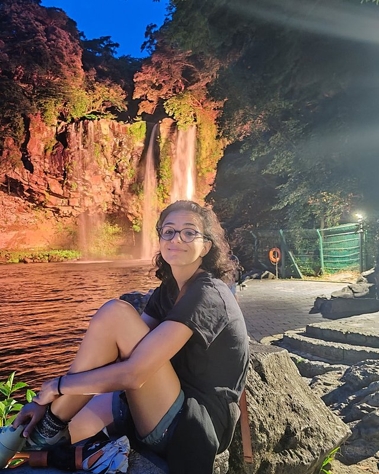

Epistemic curiosity & question-asking
What makes children and students ask good questions — and how question-asking skills can be measured, modelled, and trained in real classrooms.
Cognitive science · Human–AI interaction · Education
Postdoctoral researcher at the Hector Research Institute of Education Sciences and Psychology, University of Tübingen
I study how learners use AI to gain knowledge, how to better support these interactions, and how active learning strategies (e.g., curiosity and question-asking) can optimize them.

I am a cognitive scientist working at the intersection of education, developmental psychology, and human–AI interaction. My research asks a simple question with deep consequences: how do we keep learners motivated, and willing to invest the effort that real learning takes? The question matters more than ever at a time when instantly accessible information is reshaping our relationship with knowledge.
I study the mechanisms of epistemic curiosity and question-asking in students, and design technologies — from conversational agents to classroom interventions — that train these skills rather than replace them. I also develop methods for studying how student–AI interactions unfold: how they evolve over time, which of their features actually predict long-term learning, and how to support learners without taking away their productive struggle. Across this work I focus on the roles of metacognitive monitoring, self-regulation, question-asking, and AI literacy. My research is interdisciplinary by nature: I draw on fundamental findings from psychology and cognitive science to design controlled classroom experiments, and I use AI-supported tools to build both experimental platforms and data-analysis pipelines.
I completed my PhD in cognitive science at Inria and the University of Bordeaux (Flowers team) in 2024, in collaboration with the EdTech startup EvidenceB, advised by Dr. Pierre-Yves Oudeyer and Dr. Hélène Sauzéon, with the thesis “Guiding the minds of tomorrow: conversational agents to train curiosity and metacognition in young learners”. Along the way I was a visiting researcher in Celeste Kidd's lab at UC Berkeley, where I explored new research environments and built new collaborations. Before research, I trained as an engineer and worked as a research engineer intern in companies in both Tunisia and France.
Since November 2024 I have been a postdoctoral researcher in Prof. Dr. Kou Murayama's Motivation Science Lab at the Hector Research Institute in Tübingen, where I investigate how students regulate their learning when working with large language models.
What makes children and students ask good questions — and how question-asking skills can be measured, modelled, and trained in real classrooms.
How learners monitor what they know and don't know, and how metacognitive practice turns curiosity into effective, autonomous learning.
Whether students can remain active learners with ChatGPT-like tools: measuring how they query, evaluate, and (too often) over-trust AI answers, and what that means for how learning with AI should be designed.
Designing pedagogical agents — from GPT-3-driven tutors to child–robot interaction — that scaffold curiosity-driven behaviour instead of short-circuiting it.
Selected works marked ★ · full list on Google Scholar
PhD defense — Conversational agents to train curiosity and metacognition in learners
Plays on YouTube (privacy-enhanced mode) · watch on YouTube ↗
I have supervised six Bachelor's and Master's students in cognitive science and educational psychology at the Universities of Bordeaux and Tübingen.
The best way to reach me is by email:
Hector Research Institute of Education Sciences and Psychology
University of Tübingen, Europastraße 6, 72072 Tübingen, Germany